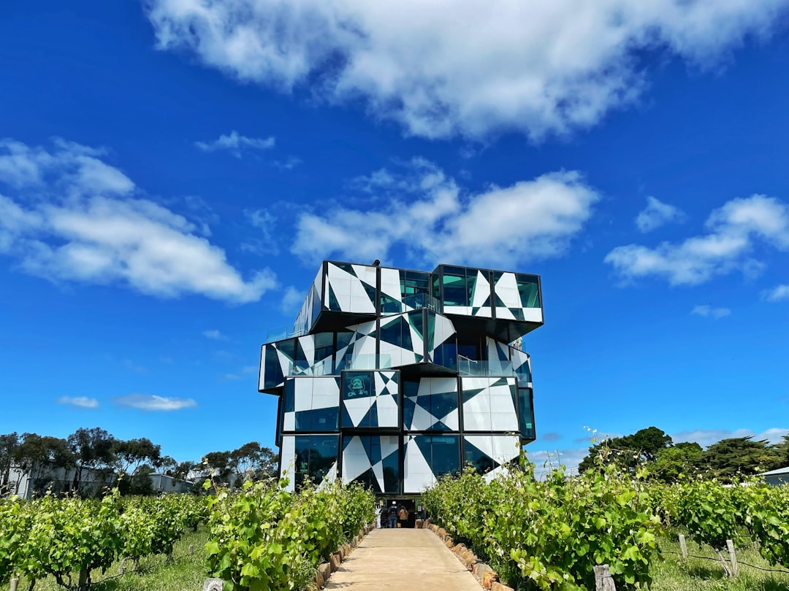

For Adelaide earthmoving enquiries, the useful brief is built around six decisions: the finished result, the machine route, known services, ground assumptions, spoil handling and the handover condition. The published Simply Earthworks material separates broad earth works, excavation, site cuts and levelling, trenching and drainage, soil and spoil removal, and tight access jobs, so a homeowner can describe the required outcome before a provider inspects and confirms scope, price, availability and terms.
For homeowners comparing earthmoving adelaide options, the practical starting point is a clear description of the finished ground, the access route and the material that must be moved.
Earthmoving Adelaide Explained
Simply Earthworks frames an Adelaide earthmoving enquiry around the condition the site should be in when the machine leaves. That is a useful discipline because a request for help can mean shaping land, cutting to a level, forming a trench, clearing a zone, loading spoil or preparing a handover for the next trade.
The brief should name the physical result rather than only the machine activity. A platform, fall, trench line, cleared area or material outcome gives the assessor a clearer basis for deciding what information is still missing. Dimensions, supplied levels, photos, plans, known services and spoil expectations are all part of the starting evidence.
For a broader crawl path on nearby planning language, this earthmoving services in Adelaide guide sits beside the same topic and helps separate service language from site preparation questions.
Access Is More Than A Gate Width
The route from street to work face needs more than a single opening measurement. The source page asks for gates, turns, eaves, gradients, surfaces, loading space and features that must remain intact. Those details help expose whether a machine can reach the work area, operate there and transfer material without relying on assumptions.
Residential work can be affected by tight side paths, landscaped areas, overhead limits and limited spoil storage. The useful question is not just whether equipment fits once. It is whether the whole operating route can support the chosen method, including loading, stockpiling, cartage and protection of existing surfaces.
- Measure the narrowest opening on the route.
- Record turns, steps, slopes and overhead limits.
- Identify nearby structures, gardens, paving and services.
- Note where spoil could be placed, loaded or removed.
Choose The Scope Before Asking For A Price
The Simply Earthworks material names six distinct project decisions. Earth works shape and prepare land around agreed levels, falls and cut and fill assumptions. Excavation removes ground to nominated dimensions or depth. Site cuts and land levelling establish supplied levels, falls and formation for building, landscaping or access work.
Trenching and drainage involve narrow routes to nominated lines and grades for the relevant licensed trade. Soil and spoil removal depends on stated material, cartage and lawful receiving assumptions. Tight access earthmoving is a planning problem around measured openings, turns, overhead limits and constrained spoil transfer.
A quote that treats all of those as one vague job may leave too much unresolved. Ask what plant category, attachments, mobilisation, ground assumptions, material handling, completion profile and variation triggers are included in the written scope.
Who This Applies To
This guide is most relevant to Adelaide homeowners, renovators and small site managers who need earthmoving assessed before landscaping, building preparation, access works, drainage coordination or spoil removal. It also suits people comparing whether their job is a general earth works task, an excavation task or a tight access planning problem.
It is less useful for someone seeking a fixed price from a short description alone. The published form notes that provider availability, timing and acceptance are not confirmed by submitting details. A provider still needs to inspect or otherwise confirm their own scope, terms and price.
Location can guide questions, but it does not replace site evidence. The source page notes that CBD loading limits, inner suburb gardens, coastal density, foothills slopes and northern growth areas raise different planning questions. None of those labels proves soil, rock, groundwater, contamination, underground assets or approvals for a particular property.
Approvals, Services And Unknown Ground Conditions
Approval depends on the proposal, property and planning controls. The source page points readers to current PlanSA information and qualified advice where levels, drainage, retaining, heritage or other regulated matters may be affected. Treat that as a prompt to ask the right question early, especially where ground levels or runoff could change.
Underground services also need direct attention. Public plans may not show private services or exact depth, so the person controlling the work must arrange suitable asset information and site specific controls. Unknowns should be kept visible in the brief, separate from observed ground, known assets and supplied design information.
Before work is assessed, gather the suburb, job type, approximate area or depth, material expectations, measured access, photos or plans and preferred timing. Avoid sending sensitive documents unless a provider specifically asks for information needed to assess the work.
- Describe the finish. State the platform, fall, trench, cleared zone or material outcome that should exist when the machine leaves.
- Measure the route. Record the complete path from street to work face, including openings, turns, overhead limits, gradients and loading space.
- Separate knowns from assumptions. List observed conditions, known assets and plans apart from items that still need locating, testing, design input or approval advice.
- Check the written scope. Review plant, access, ground assumptions, spoil handling, completion profile, reinstatement and variation triggers before work starts.
| Decision | Useful when | Ask before approving |
|---|---|---|
| Excavation to dimensions | Ground must be removed to a nominated area, depth or profile | What dimensions, asset checks, spoil controls and variation triggers are included? |
| Land shaping or levelling | The finished site needs agreed levels, falls or formation | Who supplies levels and who accepts the handover condition? |
| Trenching or drainage route | A narrow route must follow lines and grades for another trade | Which licensed trade confirms the line, grade and final connection needs? |
| Soil and spoil removal | Material must be stockpiled, loaded, transported or received elsewhere | What material assumptions, cartage and receiving charges are allowed for? |
Common questions
What is the difference between earthmoving and excavation? Earthmoving is the broader shaping and preparation of ground. Excavation is the removal of material to a defined profile, area or depth, and a single project may include both.
Can small residential jobs be reviewed? Small jobs can be reviewed when the location, access, dimensions, material and required outcome are supplied. Suitability and minimum charges depend on the provider's written scope.
Does an Adelaide suburb name prove what method is needed? No. The source page treats location as context, not a ground report, because soil, rock, groundwater, contamination, underground assets and approvals still need site specific assessment.
Who checks underground services before work? The person controlling the work must arrange suitable asset information and site specific controls. Public plans may not show private services or exact depth.
This guide covers practical Adelaide earthmoving brief preparation, access checks, scope choices, spoil questions and site review inputs.